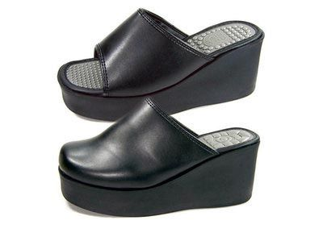

교생실습 궁금해서 나무위키로 쳐봤습니다.
1~2주차는 주어진 참관 시간표에 따라 수업을 참관하다가, 3주차 즈음에 지도교사의 참관 하에 교실에 들어가서 수업한다. 그리고 인터넷, 교사용 지도서 등을 참고하여 지도안[14]을 작성한다. 4주차에, 공개수업을 하게 된다. 교생은 지도안(subplan), 활동지, 파워포인트 화면[15], 평가 양식 등을 인쇄하여 교실 뒤 의자에 배치하여, 참관 선생님들이 볼 수 있게 한다. 이 시간에 교장, 교감, 전공 과목의 교사들, 연구부장 등이 교실 뒤에서 참관하며, 이후 '협의회'를 열어 평가 및 피드백을 받는다. 공개수업이 끝나면, 사실상 교생실습 다 한 셈이다.
4주차 공개수업이 연구수업인가봅니다ㅋㅋㅋ

그리고 이 통굽 슬리퍼가 여교생 선생님 필수품이라는 사실입니까?
후원댓글 6개
댓글 6개 ▼